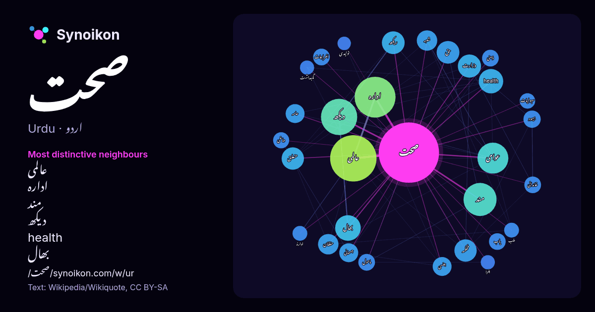

اردو · مقبول لفظ
صحت
“health” · ویکیپیڈیا, Wikiquote کے 928 استعمالات میں اس کے آس پاس ملنے والے الفاظ۔

سب سے نمایاں پڑوسی
- عالمی 47×
- ادارہ 45×
- مند 37×
- دیکھ 33×
- health 30×
- بھال 28×
- ریکھ 24×
- عوامی 24×
- حفظان 21×
- وزارت 19×
- محکمہ 17×
- عامہ 17×
- بہبود 14×
- جسمانی 14×
- شعبہ 14×
- یاب 13×
- دماغی 13×
- ذہنی 12×
- جنسی 12×
- اخراجات 12×
× = عام ویکیپیڈیا متن کے مقابلے میں کتنے گنا زیادہ۔
سب سے زیادہ آنے والے پڑوسی
- میں 197
- سے 154
- کا 146
- عالمی 108
- کو 90
- ادارہ 84
- دیکھ 66
- لیے 63
- اس 56
- مند 55
- نے 52
- عوامی 48
- جو 44
- تعلیم 37
- یا 36
- بھال 33
- وہ 31
- health 30
- بھی 30
- کیا 27
سیاق میں
- صحت کے لیے اردو زبان میں متبادل کے طور پر تندرستی کا لفظ مستعمل ہے۔ یہ لفظ دو الفاظ تن اور درستی کا مرکب ہے۔ اس سے مراد جسم کی وہ کیفیت ہے جو معمول کے Wikipedia snippets · صحت
- عالمی ادارہ صحت یا ورلڈ ہیلتھ آرگنائزیشن (WHO) اقوام متحدہ کا ذیلی ادارہ ہے، جو عالمی سطح پر عوامی صحت کے بارے کام کر رہا ہے۔ اس ادارے کا مرکزی دفتر سوئٹزرلینڈ Wikipedia snippets · عالمی ادارہ صحت
- خواتین کی صحت، صحتِ نسواں یا عورتوں کی صحت بہ طور خاص صحت کی دیکھ ریکھ اور اس جڑے اہم معاملات کا نام ہے جو عورتوں کے ساتھ مخصوص ہیں۔ یہ معاملات مردوں Wikipedia snippets · خواتین کی صحت
- صحت عامہ یا عوامی صحت سے مراد "سائنس اور فنون کی وہ شاخ ہے جو امراض کے ازالے، صحت کی طوالت اور منظم طریقوں سے اور سماج، تنظمیموں، عوامی، نجی اور انفرادی Wikipedia snippets · صحت عامہ
- معیار زندگی کے لیے صحت کے مختلف پروگرام اور پالیسیاں شروع کی ہیں۔ امور صحت وزارت صحت و خاندانی بہبود کے تحت ہیں۔ نیز اس وزارت کو محکمہ صحت، محکمہ خاندانی Wikipedia snippets · وزارت صحت و خاندانی بہبود، حکومت ہند
- ممالک بلحاظ احاطہ اخراجات صحت منجانب حکومت (List of countries by health expenditure covered by government) ہے، جسے عالمی ادارہ صحت نے 2012ء میں شائع کیا ہے۔ Wikipedia snippets · فہرست ممالک بلحاظ احاطہ اخراجات صحت منجانب حکومت
- بھارت میں صحت (انگریزی: Health in India) بھارت میں مردم شماری، 2011ء کے مطابق یہاں کی کل آبادی 1.21 ہے جس میں 0.62 مرد اور 0.588 خواتین ہیں۔ ریاستوں کے Wikipedia snippets · بھارت میں صحت
- بھر میں صحت کے بارے میں شعور اجاگر کرنے کے لیے ہر برس 7 اپریل کو عالمی یوم صحت (World Health Day) کے طور پر منایا جاتا ہے۔ اس دن عالمی یوم صحت کے موقع Wikipedia snippets · عالمی صحت کی نگہداشت
مزید الفاظ
2026-10-09 کو طے شدہ ترتیبات (±5 الفاظ، درمیانہ کارپس) کے ساتھ پہلے سے شمار کیا گیا۔ انٹرایکٹو نقشہ اسے لائیو ڈیٹا سے تازہ کر سکتا ہے۔
مشینی ترجمہ شدہ انٹرفیس؛ اصلاحات کا خیرمقدم ہے۔